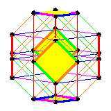
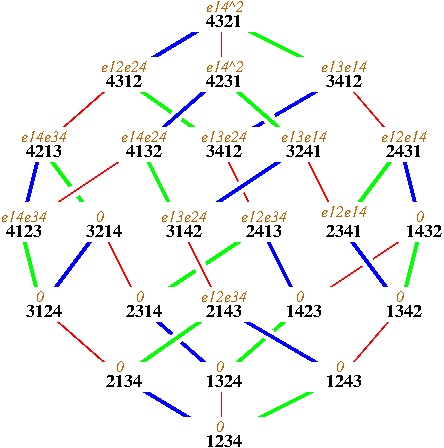

{kind=link}

The pattern map in (equivariant) cohomologyH. Praise Adeyemo and Frank SottileSupported in part by the IMU (Abel travelling grant for Adeyemo) and the NSF (DMS-1001615 and DMS-1501370). |  |
|
Cohomological consequences of the pattern map, 10 pages, 2014. arXiv.org/1408.4085. Illinois Journal of Mathematics, to appear. |
| Billey and Braden defined maps on flag manifolds that are the geometric counterpart of permutation patterns. A section of their pattern map is an embedding of the flag manifold of a Levi subgroup into the full flag manifold. We give two expressions for the induced map on cohomology. One is in terms of generators and the other is in terms of the Schubert basis. We show that the coefficients in the second expression are naturally Schubert structure constants and therefore positive. Similar results hold for K-theory, generalizing known formulas in type A for cohomology and K-theory. |
|
Equivariant cohomology theories and the pattern map, 15 pages, 2015. |
| Billey and Braden defined a geometric pattern map on flag manifolds which extends the generalized pattern map of Billey and Postnikov on Weyl groups. The interaction of this torus equivariant map with the Bruhat order and its action on line bundles leads to formulas for its pullback on the equivariant cohomology ring and on equivariant K-theory. These formulas are in terms of the Borel presentation, the basis of Schubert classes, and localization at torus fixed points. |
|
Both papers had a example that involved pulling a class back from SP_4/B to
SL_4/B, which required computing a product in cohomology/equivariant cohmology.
In Cohomological consequences of the pattern map,
this was done using the Pieri formula.
For Equivariant cohomology theories and the pattern map,
we used S. Kaji's maple
package to compute this, running the file C4_ex.maple
from a command line to produce the output C4_ex.output.
To convert that output into the example in the paper, you will need to convert between expressing
an element of the Weyl grop C4 written as a product of simple reflections (the
encoding of Weyl groups in Kaji's software) into a signed permutation (as we use in our paper).
In Equivariant cohomology theories and the pattern map we gave an example of pulling back an equivariant class from the manifold of flags in C4 to the product P1xP1, using three different formulas. The first, and by far the simplest, is restriction. At right, we display the restriction of the equivariant Schubert class S2143 to the T-fixed points of the flag manifold (displayed on the weak order, as it includes 1/2 of the one-skeleton). The symbol eij represents the element of the ring generated by characters corresponding to the root tj-ti. The six thickened diamonds are the one-skeleta of the images of P1xP1 under a section of the pattern map. Restricting to these diamonds gives the pullback of S2143 anong the corresponding section, which must then be decomposed into a combination of the four Schubert classes on P1xP1. (See the paper for details.) The pullback may also be computed by the action of the shortest permutation in the corresponding diamond on the equivariant class The third formula involves computing products in the equivariant cohomology ring of the full flag manifold. For that, we used Kaji's software, running the file A3_ex.maple from a command line to produce the output A3_ex.output. The same comments about switching between encoding for Weyl group elements still apply. |  |